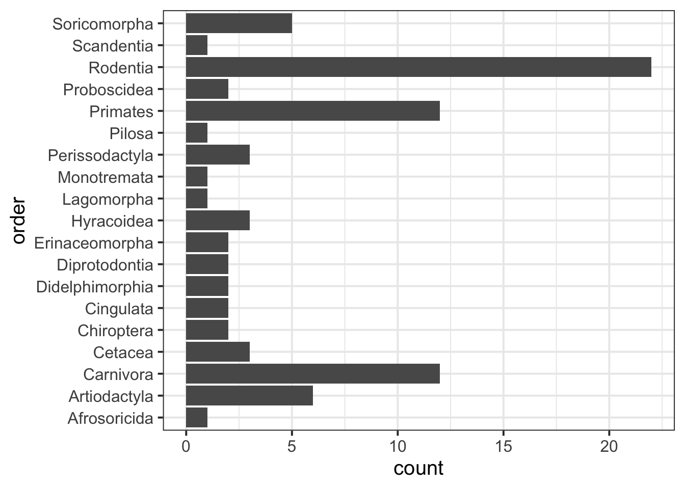
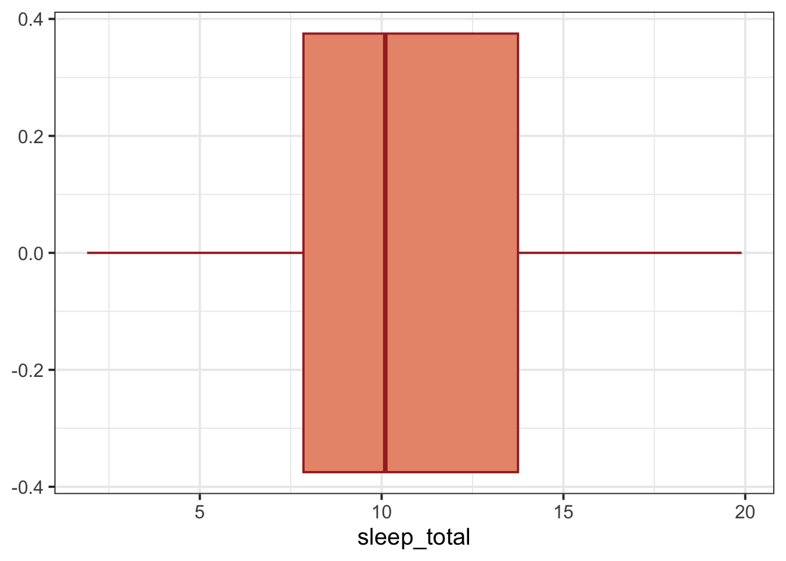
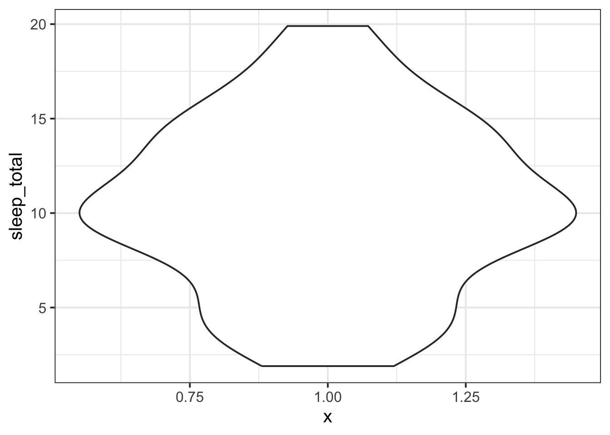
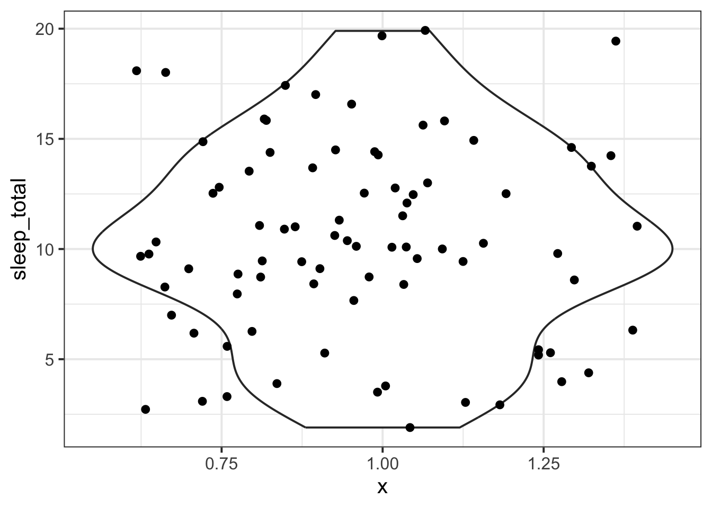
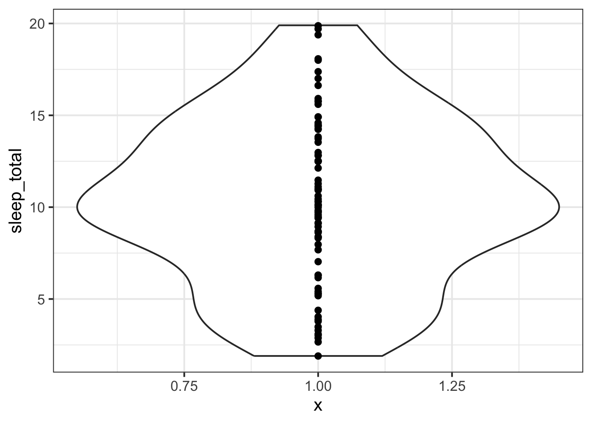

To make plots, we will use the ggplot() function from tidyverse.
We’ll make plots table using the msleep dataset that comes from tidyverse. msleep contains some data about how much different kinds of mammals sleep. Here’s what the first few rows of msleep look like.
msleep |>head()
# A tibble: 6 x 11
name genus vore order conservation sleep_total sleep_rem sleep_cycle awake
<chr> <chr> <chr> <chr> <chr> <dbl> <dbl> <dbl> <dbl>
1 Cheetah Acin~ carni Carn~ lc 12.1 NA NA 11.9
2 Owl mo~ Aotus omni Prim~ <NA> 17 1.8 NA 7
3 Mounta~ Aplo~ herbi Rode~ nt 14.4 2.4 NA 9.6
4 Greate~ Blar~ omni Sori~ lc 14.9 2.3 0.133 9.1
5 Cow Bos herbi Arti~ domesticated 4 0.7 0.667 20
6 Three-~ Brad~ herbi Pilo~ <NA> 14.4 2.2 0.767 9.6
# i 2 more variables: brainwt <dbl>, bodywt <dbl>
Sometimes if the labels are long enough, then they’ll overlap if the variable is shown along the x axis. In that case, it’s more reader-friendly to show them along the y axis.
msleep |>ggplot(aes(y = order)) +geom_bar()

Customise your bar plot
Inside geom_bar(), you can use the fill argument to specify a colour for all the bars, or you can use the colour argument to specify a colour to outline each bar. Or both!
CautionWhere are these –0.4, –0.2, 0.0 numbers coming from?
They’re meaningless numbers that ggplot puts there automatically. Why? Because by default, it wants to display some values on both the y axis and the x axis. So it invents these ones to put on the axis that you haven’t defined.
Advanced: To suppress those numbers, you can add the following theme() function to your code. (Don’t worry too much about what these bits mean yet.)
If you specifically want to visualise the data’s median and IQR, the boxplots are fine. But if you want to visualise the true distribution of the data, then boxplots might not meet your needs. See, for example, the article I’ve Stopped Using Box Plots. Should You?).
An alternative is a violin plot with jittered points, which you will find if you uncollapse the “More kinds of plots” rabbit hole below!
Customise your boxplot
The fill argument of geom_boxplot() changes the background colour, and the colour argument changes the outline colour.
msleep |>ggplot(aes(x = sleep_total)) +geom_boxplot(colour ='brown', fill ='darksalmon')

Histogram
To visualise numeric data, we can use a histogram, which shows the frequency of values which fall within bins of an equal width.
CautionBut I want to know what the “density” numbers mean
Think of “density” like “relative frequency”, with a twist.
In a density plot, mathematically speaking, the total area under the curve is equal to 1.
So the values on the y axis are like counts, but scaled, so that the total area under the curve comes to 1.
Violin plot
A violin plot is an alternative to a boxplot if you want to visualise a variable’s whole distribution, not just its IQR.
A violin plot is essentially a density plot that’s been stood upright on its end, and then mirrored to create a violin-like shape:
msleep |>ggplot(aes(y = sleep_total, x =1)) +# note: aes(x = 1) is not meaningful, # but necessary for the plot to work# if we're only plotting one variablegeom_violin()

Just like with the boxplots, the values that ggplot invents along the x axis are not meaningful.
Advanced: you might want to show the individual data points on top of the violin as well. You can achieve that with geom_jitter(), which plots one point for each observation.
msleep |>ggplot(aes(y = sleep_total, x =1)) +geom_violin() +geom_jitter()

How to interpret geom_jitter()?
It looks like a cloud of data points, but only the values on the y axis are actually meaningful. Each data point is plotted at the correct sleep_total position along the y axis, and its position on the x axis is randomly “jittered” so that the data points don’t overlap.
CautionChanging the amount of jitter
Here’s what those data points would look like if they weren’t vertically jittered at all: that is, if they were all lined up at the same y value.
msleep |>ggplot(aes(y = sleep_total, x =1)) +geom_violin() +geom_jitter(width =0)

You can play with the width argument of geom_jitter() to find your favourite happy medium.
msleep |>ggplot(aes(y = sleep_total, x =1)) +geom_violin() +geom_jitter(width =0.2)